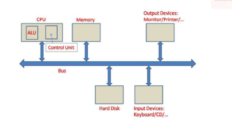

A programmable electronic device designed to accept data, perform prescribed mathematical and logical operations at high speed, and display the results of these operations.
Volatile primary memory used for temporary storage of data and machine code currently being executed or processed by the CPU. Data is lost when power is removed.
Non-volatile primary memory that permanently stores hardwired instructions required for system boot-up and basic operations. Data remains intact even without power.
A fast, expensive type of RAM that uses bistable latching circuitry to store each bit. It retains data as long as power is supplied without needing periodic refreshing, making it ideal for CPU cache memory.
A denser and more cost-effective type of RAM that stores each bit in a microscopic capacitor. Since capacitors leak charge, DRAM requires constant refreshing to maintain its data. It is primarily used as main system memory.
Non-volatile firmware typically stored on a ROM chip. It is responsible for performing hardware initialization during the booting process (power-on startup) and passing control to the operating system.
Registers >
L1 Cache >
L2 Cache >
L3 Cache >
L4 Cache >
Main Memory (RAM) >
Solid State Drive (SSD) >
Disk Drive (HDD)
A computation is any type of calculation that includes both arithmetical and non-arithmetical steps and which follows a well-defined model (e.g. an algorithm). Mechanical or electronic devices (or, historically, people) that perform computations are known as computers.
| Generation | Time Period | Core Technology | Key Characteristics & Examples |
|---|---|---|---|
| First | 1940 – 1956 | Vacuum Tubes | Extremely bulky, high power consumption, relied on machine language. Ex: ENIAC, UNIVAC |
| Second | 1956 – 1963 | Transistors | Smaller, faster, cheaper, and used assembly languages. Ex: IBM 7094, UNIVAC 1108 |
| Third | 1964 – 1971 | Integrated Circuits (ICs) | Introduced operating systems, keyboards, and monitors. Ex: IBM 360, PDP-8 |
| Fourth | 1971 – Present | Microprocessors (VLSI) | Rise of Personal Computers (PCs), GUIs, and the Internet. Ex: Apple II, IBM PC |
| Fifth | Present & Beyond | Artificial Intelligence (ULSI) | Parallel processing, machine learning, natural language processing. Ex: Robotics, Quantum Computing |
A finite number of precise and concise unambiguous instructions, to solve a given problem, which can be executed in a finite time on a computer to obtain the envisaged solution.
It is a graphical illustration of the steps under the algorithm used to understand and check the algorithm.
| Shape | Convention | Standard Use |
|---|---|---|
| Rounded Rectangle | Rectangles with rounded ends are used to indicate start and stop. | |
| Parallelogram | Parallelograms are used to represent input and output operations. | |
| Diamond | Diamond shaped boxes are used to indicate conditions. | |
| Rectangle | Rectangles are used to indicate any processing operation such as storage and arithmetic. |
A dummy computer language for "tentative discussion".
Program <FIND_TOPMARKS(Input, Output)>
Variables Name, Rollno, Marks, Maxname, Maxrollno, Maxmarks;
Begin
Readdata(Name, Rollno, Marks);
Set {
Maxmarks <- Marks;
Maxrollno <- Rollno;
Maxname <- Name; }
While not_EOF(Input) do
begin
Readdata(Name, Rollno, Marks);
if (Marks > Maxmarks) then
Set {
Maxmarks <- Marks;
Maxrollno <- Rollno;
Maxname <- Name; }
end;
Printdata(Maxname, Maxrollno, Maxmarks);
End;A formal language comprising a set of instructions that produce various kinds of output. Programming languages are used in computer programming to implement algorithms. Most programming languages consist of instructions for computers.
| Programming Paradigm | Description | Representative Languages | Typical Applications |
|---|---|---|---|
| Imperative | Specifies how a computation is performed using statements that change program state. | C, Fortran, Pascal, BASIC, Ada |
Scientific computing, operating systems, embedded systems |
| Procedural | Organizes imperative code into reusable procedures/functions. (Our Current Focus) | C, Pascal, Fortran 90/95, Ada, COBOL |
Numerical analysis, engineering software, compilers |
| Object-Oriented (OOP) | Organizes programs as interacting objects with encapsulation, inheritance, and polymorphism. | Java, C++, C#, Python, Ruby, Swift, Kotlin |
Enterprise software, GUI applications, game development |
| Declarative | Specifies what the program should accomplish rather than how. | SQL, HTML, CSS, XQuery, Haskell, Prolog |
Databases, web development, query processing |
| Functional | Computation is expressed through mathematical functions and immutable data. | Haskell, Lisp, Scheme, OCaml, F#, Erlang, Elixir, Clojure |
Compilers, AI, concurrent programming, theorem proving |
| Logic | Programs consist of logical facts and inference rules. | Prolog, Datalog, Mercury, Clingo |
Artificial intelligence, expert systems, automated reasoning |
| Mathematical | Languages designed for symbolic and numerical mathematics. | MATLAB, Mathematica, Maple, Julia, R, GNU Octave |
Numerical linear algebra, optimization, PDEs, scientific computing |
| Symbolic | Manipulates symbolic expressions instead of only numerical values. | Mathematica, Maple, Lisp, Maxima, Reduce, SymPy |
Symbolic integration, algebra, theorem proving, computer algebra systems |
| Reflection (Metaprogramming) | Programs inspect or modify themselves during execution. | Java, C#, Python, Ruby, Smalltalk, Lisp |
Dynamic software, frameworks, compilers, plugin systems |
Programming languages can be grouped into five different generations based on their abstraction, performance, and robustness:
| Generation | Type | Description | Examples |
|---|---|---|---|
| 1st Generation (1GL) | Low-level | Machine language consisting of raw binary instructions executed directly by the CPU. | Machine code (0s & 1s) |
| 2nd Generation (2GL) | Low-level | Assembly languages. Used for writing kernels, hardware drivers, and highly optimized processing engines. | Assembly |
| 3rd Generation (3GL) | High-level | General-purpose languages that abstract hardware details away from the programmer. | C, C++, Java, JavaScript, Visual Basic |
| 4th Generation (4GL) | Very High-level | Languages with syntax very close to human language, heavily used for databases and scripting. | SQL, Python, Ruby, Perl, PHP |
| 5th Generation (5GL) | Logic / AI | Languages where the programmer defines the constraints and rules, and the computer solves the problem. | Prolog, Mercury, OPS5 |

Block diagram illustrating the shared bus communication between the CPU (ALU & Control Unit), Memory, and Input/Output devices.
| Character | ASCII Value (Decimal) | ASCII Value (Hex) |
|---|---|---|
0 (Zero) |
48 | 0x30 |
A |
65 | 0x41 |
a |
97 | 0x61 |
| Memory Unit | Symbol | Equivalent Capacity |
|---|---|---|
| Bit | b | 1 Binary Digit (0 or 1) |
| Nybble | - | 4 Bits |
| Byte | B | 8 Bits |
| Kilobyte | KB | 1024 Bytes |
| Megabyte | MB | 1024 KB |
| Gigabyte | GB | 1024 MB |
| Terabyte | TB | 1024 GB |
| Petabyte | PB | 1024 TB |
| Exabyte | EB | 1024 PB |
| Zettabyte | ZB | 1024 EB |
| Yottabyte | YB | 1024 ZB |